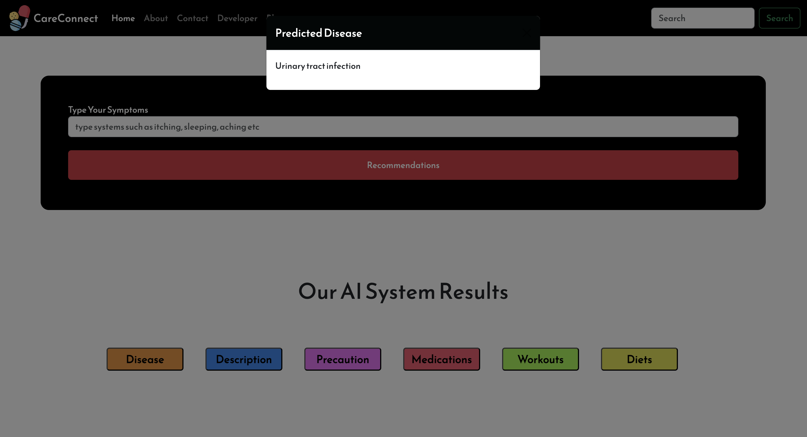
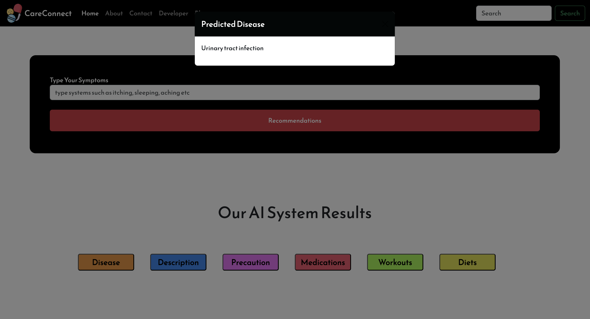
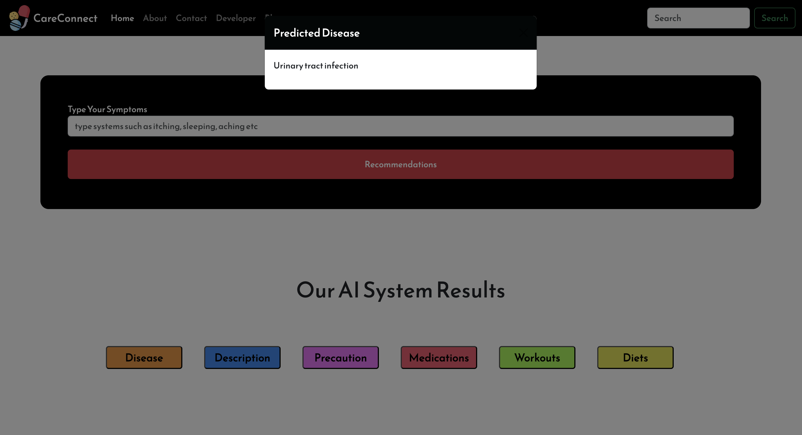
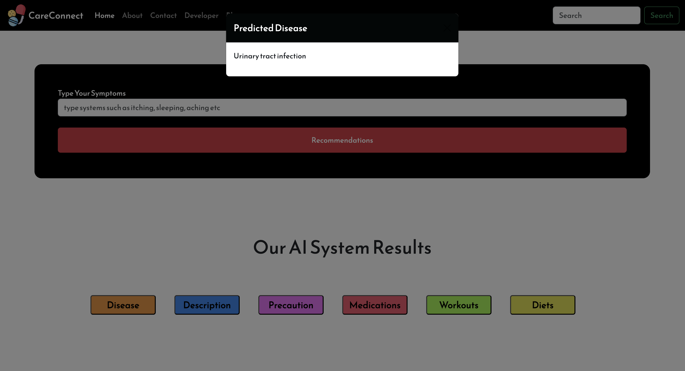

 

Project Overview
Developed a machine learning-powered medical recommendation system that predicts diseases based on symptoms and suggests treatments using models like SVC, Random Forest, and Gradient Boosting. Designed and deployed RESTful APIs with Flask, built an interactive web interface with HTML and Bootstrap, and integrated ChromaDB for AI-powered recommendations.